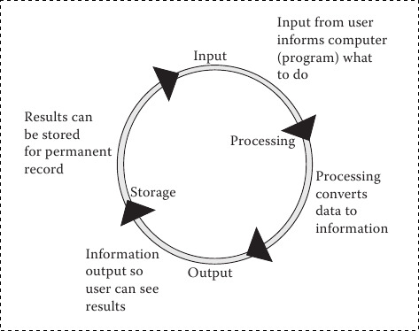
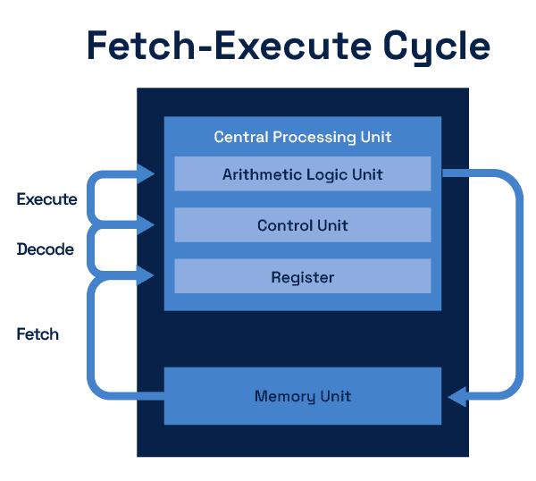
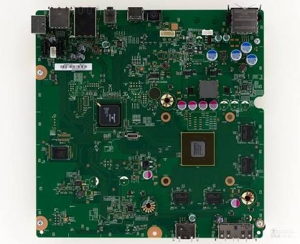
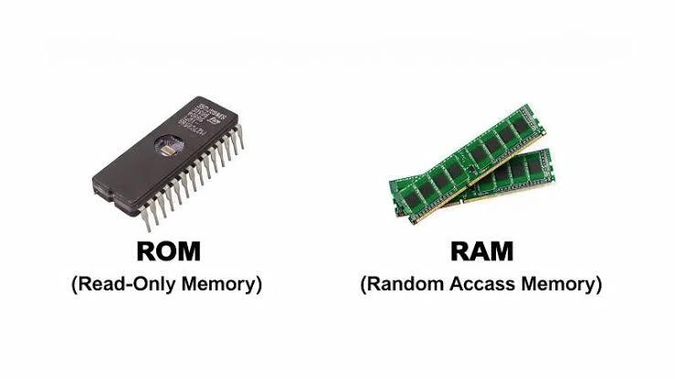

Connect computing to University of Baguio's institutional mandates (Competence + Integrity = Service and UB CARES), master the Information Processing Cycle (IPC), explore hardware architecture, and classify system, application, and middleware software licensing.
Learning Objectives
Apply UB's Core Values (Competence + Integrity = Service) and UB CARES attributes to IT scenarios.
Trace data through the Information Processing Cycle (Input, Processing, Output, Storage) and distinguish CS, IT, CpE, IS, and SE.
Analyze CPU components (CU, ALU, Registers), Fetch-Execute cycle, RAM vs. ROM, and the Storage Hierarchy.
Classify System Software, Application Software, Middleware, and the six software licensing models.
Lesson 1.1: The Computing Profession and Institutional Context
Key Reminder: Professional Ethics Warning: Under ACM/IEEE codes and UB's Core Value of Integrity, IT practitioners must never access confidential employee or student records without explicit authorization.
Technical mastery, analytical precision, and foundational knowledge needed to build optimized, secure computing solutions.
2. INTEGRITY
Cultivating ethical values—adhering to honest practices, protecting data privacy, and respecting intellectual property.
3. SERVICE
Applying technical skills to build accessible, human-centric software that drives sustainable community growth.
Letter
UB CARES Attribute
Application in Information Technology
C
Critical and Creative Thinker
Solves complex algorithmic problems and designs creative digital architectures.
A
Active and Lifelong Learner
Continuously updates skills across rapidly evolving languages, cloud tools, and frameworks.
R
Reflective Leader
Evaluates human impact and guides teams toward ethical, reliable solutions.
E
Effective Communicator
Translates technical specifications and deployment steps clearly for stakeholders.
S
Service-Driven Citizen
Builds inclusive tools respecting accessibility standards and Philippine digital laws.
1.1.2 Information Processing Cycle (IPC) & 1.1.3 Domains of Computing

The four-stage Information Processing Cycle (Input → Processing → Output → Storage).
The four stages of IPC are: 1. Input (capturing raw data via keyboard/sensors) → 2. Processing (CPU transforming data into information) → 3. Output (presenting results on monitor/printer) → 4. Storage (saving files permanently on SSD/HDD/Cloud).
Computer Science (CS): Theory, algorithms, computational complexity, AI research.
Information Technology (IT): Organizational deployment, systems administration, networking, web & IT support.
Key Reminder: Hardware & ESD Safety Warning: Always power down the workstation, unplug the PSU cable, and ground yourself before touching exposed motherboard circuits, CPU pins, or RAM DIMMs.
1.2.1 System Unit: CPU, Motherboard & Primary Memory
Control Unit (CU)
Directs system operations, fetching instructions and orchestrating hardware signals.
Arithmetic Logic Unit (ALU)
Performs all mathematical calculations and logical comparisons (e.g., X > Y).
CPU Registers
Ultra-fast internal memory cells inside the CPU holding immediate operands.
CPU Fetch-Execute Cycle:1. Fetch (from RAM) → 2. Decode (translate opcode) → 3. Execute (ALU math/logic) → 4. Store (write back to register/RAM).

CPU Instruction Cycle: Fetch → Decode → Execute → Store.
Motherboard ("The Spine"): Main PCB connecting CPU, RAM, chipset ("Traffic Cop"), and expansion buses (PCIe, USB).

Computer Motherboard layout connecting the CPU, RAM, chipset, and PCIe/USB interfaces.
RAM vs. ROM:RAM (DDR4/DDR5) is volatile active workspace erased at power-off; ROM is non-volatile firmware storing BIOS/UEFI boot instructions.

Primary Memory comparison: Volatile RAM modules vs. Non-Volatile ROM firmware.
System Software: Operating System ("Grand Conductor": Windows, Linux, macOS), Device Drivers ("Translators" for printers/GPUs), Utilities (Antivirus, 7-Zip), and Firmware (BIOS/UEFI).
Application Software: End-user productivity and creative apps (MS Word, Chrome, Photoshop).
Read through each lesson and test your understanding with the inline quiz at the end. Click Mark Lesson Completed to update your progress bars and daily study streak!